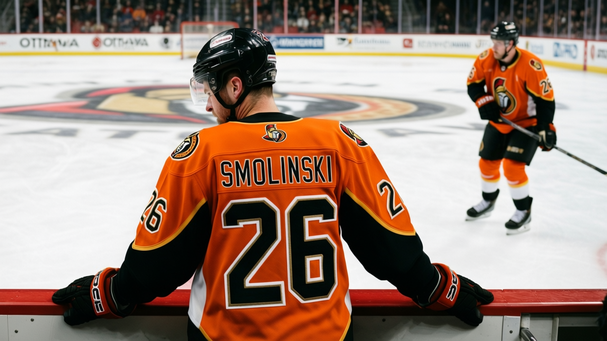

Ottawa's Room: 16 Points Between the Top and the Bottom
OTT's club morale average is 85.8 on the Bureau's Morale Scale, the lowest mark in the league. Inside the room, the spread runs 16 points: from 90 (Todd White, Anton Volchenkov) to 74 (Peter Schaefer, Vaclav Varada, Brya…


 Doug Reimer·4 min read
Doug Reimer·4 min read